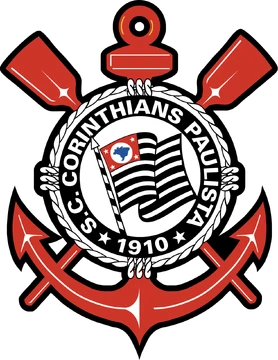
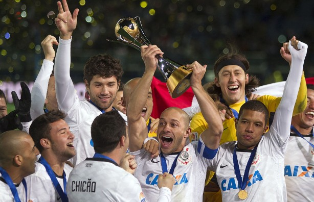

História de títulos do Sport Clube Corinthians Paulista. O que é ser corinthiano? Eis uma resposta inexplicável. Eis um sentimento indecifrável. Alguns dizem que é um estado de espírito. Outros afirmam que ser corinthiano é ser maloqueiro e sofredor, graças a Deus. Já Toquinho preferiu o argumento de que ser corinthiano é ser um pouco mais brasileiro. É, pode ser.Sim, ninguém entende. Ninguém entende como colocamos 70 mil pessoas no Macaranã naquele 5 de dezembro de 1976. Não dá para entender como caímos naquele 2 de dezembro de 2007, e, mesmo assim, a paixão só aumentou. É difícil entender um jejum de 23 anos sem títulos e um corinthianismo ainda maior. Ah, Corinthians! Sim, eu nasci corinthiano. E, como diz a música, já virou obsessão. É gostoso demais. Aconteça o que aconteça, bato pé e não abro mão.O Corinthians é isso. Ou seja, não se define. Apenas se reflete no coração de cada corinthiano. No grito do torcedor. No choro, na lágrima e na alegria. Corinthians não é vitória, nem derrota. É Corinthians. Somos um bando de loucos? Talvez. Fiel? Isso é pleonasmo.Não tenho vícios. Meu vício é o Corinthians. Tenho um amor eterno. E ele se chama Corinthians.Quando eu morrer, ahh, quando eu morrer, não quero choro nem vela. Quero uma bandeira preta e branca. Um surdo e uma só música: salve o Corinthians, o campeão dos campeões, eternamente dentro dos nossos corações. Em vida? Em vida, eu te celebro a cada dia. Em qualquer canto do Brasil. Seja onde for, para sempre meu grande amor.Corinthians!Timão!Só quem é um sabe do que estou falando!
 